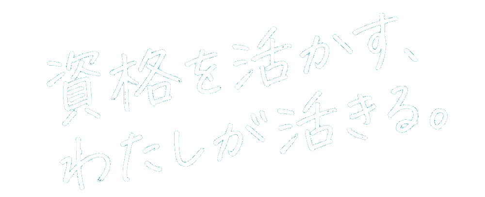
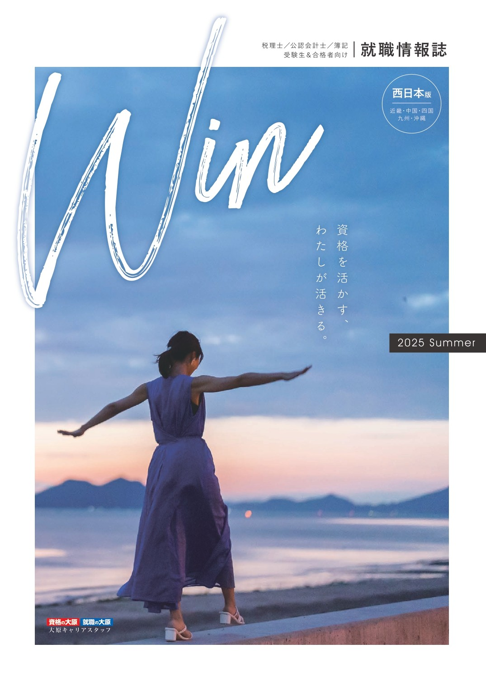

税理士法人・会計事務所が出展する各ブースにて、個別面談ができるイベントです。
仕事内容や就業環境について理解を深めたり、そのまま採用選考に応募することも可能です。
税理士法人・会計事務所が多数参加。それぞれの強みや雰囲気を直接比較して、自分に合う職場を見つけられます。
Webサイトや求人情報だけでは分からない、所長や先輩所員の「生の声」を聞くチャンス。
資格勉強中の方や業界未経験の方も歓迎。アドバイザーへのキャリア相談も可能ですので、まずは話を聞くだけでもOKです。
税理士業界でキャリアを考えるすべての方へ。
資格や経験の有無に関わらず、第一歩を踏み出す
絶好の機会です。
税理士業界で働きたい学生の方（新卒・既卒問わず）
転職をお考えの社会人の方
今後の活動に備えて情報収集したい方
※就職面談会参加者アンケートより抜粋
堅苦しくないカジュアルな雰囲気、気になることを質問できる環境でした。
就職がまだ先であるため、具体的なイメージを全く持てていませんでした。しかし、今日参加したことで、たくさん情報が得られ、就職についても具体的なイメージが湧きました。
冊子だけでは知れなかった情報を得たり、働いている方とも直接話せたため、応募先を考えるうえで非常に参考になりました。
大学3回生です。情報収集のためだけに参加してもいいのだろうかと不安に思いましたが、業界の生の声が聞けたのでとても良かったです。
求人サイトなどに掲載されていない税理士法人も参加されていました。選考に進む機会も作ることができて良かったです。
実際に様々な事務所の方とお話しすることで、自分自身の考えが変わりました。
| 日時 |
2026年8月8日（土） 10:30～13:30（受付開始 10:00） ※10:30よりオリエンテーションを開始します |
|---|---|
| 会場 |
大原簿記専門学校大阪校本館 〒532-0011 大阪府大阪市淀川区西中島3丁目15-22
・阪急京都線 南方駅 徒歩2分
Googleマップで見る
・Osaka Metro御堂筋線 西中島南方駅 徒歩4分 |
| 参加費 | 無料 |
| 服装 | スーツ（クールビズOK） |
| 持ち物 |
筆記用具・就職情報誌Win・履歴書・職務経歴書 （職務経歴の無い方は自己紹介書）  |
近畿圏を中心に、様々な税理士法人・会計事務所が参加します。特徴や魅力について、事前に確認しておきましょう。（順不同）
よくあるご質問をまとめました。
他にご不明な点があれば、
お気軽にお問い合わせください。
はい。例年未経験の方が大半です。資格についても、日商簿記のみ取得、これから受験予定の方もいらっしゃいます。
必須ではありませんが、お持ちいただくと担当者との面談がスムーズに進みます。応募予定の事務所数分＋αを印刷してご用意ください。また、最低限の情報を記入いただける「プロフィールシート」をご持参いただいてもかまいません。
なお、会場にコピー機のご用意はございませんので、ご注意ください。
はい、ご都合に合わせて自由に参加・退出いただけます。ただし、オリエンテーションは10:30より1回のみ実施となりますので、途中参加の場合は聴講いただけません。